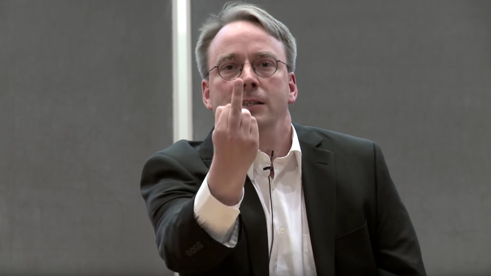

Biografia

Linus Torvalds é um engenheiro de software finlandês, nascido em 28 de dezembro de 1969, em Helsinque, na Finlândia. Ele é mundialmente conhecido por ter criado, em 1991, o Linux,um kernel de sistema operacional que deu origem a diversas distribuições utilizadas em servidores, computadores pessoais, supercomputadores e dispositivos móveis.Torvalds iniciou o desenvolvimento do Linux como um projeto pessoal enquanto estudava na Universidade de Helsinque.O que começou como uma alternativa ao sistema MINIX rapidamente se transformou em um dos maiores projetos de software livre do mundo, impulsionado pela colaboração de milhares de desenvolvedores.Além do Linux, Torvalds também criou o Git, um sistema de controle de versão amplamente utilizado no desenvolvimento de software. Seu trabalho teve impacto profundo na cultura open source e na indústria da tecnologia, tornando-o uma das figuras mais influentes da computação moderna.